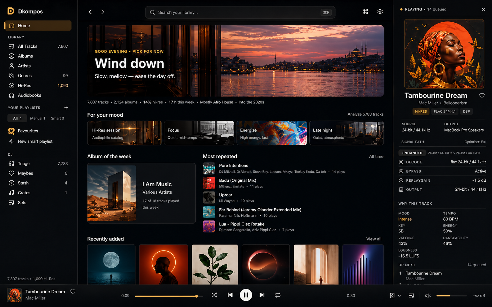

kompos.
Your signal path. Your next set. Your library.

On listening
What you press play on is what you hear.
Dkompos is built for audiophiles first — a direct signal path with DSP bypass, hi-res aware, exclusive output, and every stage of the chain visible at all times. DJs get a full crate-and-set workflow inside the same library. Serious listeners get a player that holds a collection the way a turntable holds a record.
01 Audio
The sound path should not be a mystery.
Exclusive output. DSP bypass when you want the source untouched — same sample rate, same bit depth, no resampling, no dithering. Parametric EQ, crossfeed for headphones, upsampling when the chain calls for it, ReplayGain when it doesn’t. The right-rail readout shows what is actually engaged — and what is being bypassed — before a single sample reaches the converter.
02 Intelligence
Every track, analysed.
BPM and Camelot key for harmonic mixing. Loudness in LUFS. Energy, valence, danceability. A semantic embedding from a music-aware model that runs on-device — no uploads, no cloud. Smart playlists you write once and the library keeps full. Mood sessions surface tracks you forgot were brilliant. "Why this track" always shows its work.
- Mood
- Intense
- Tempo
- 83 BPM
- Key
- 5B
- Energy
- 50%
- Valence
- 43%
- Danceability
- 46%
- Loudness
- −16.5 LUFS
03 DJ
A workflow, not a feature list.
The same library that holds your hi-res collection is where you triage what’s new, stash maybes, and build sets in order with key, tempo, and energy alongside the names. Export to the booth in the format the booth expects.
04 Audiobooks
Long-form, held the same way.
Books and lectures sit alongside the music in the same library. Resume per title, chapter navigation, natural file ordering — chapter 2 follows chapter 1 instead of chapter 10. Listening picks up exactly where you left off.
- Title
- The Way of Kings
- Chapter
- 14 of 75
- Position
- 09:47:23 / 38:52:11
- Format
- FLAC · 16 / 44.1
05 Library
Built to hold a serious collection.
Albums, edits, hi-res files, loose downloads, the tracks you forgot were brilliant. Search runs against the whole catalogue in milliseconds. Quality stays honest — hi-res files keep their badges; lossy ones are labelled the same way.
The list works for the library, not the other way round.
Get Dkompos.
Version 1.3.0 is preparing for public distribution. Join early access while the release pipeline finalises.
- Version
- 1.3.0
- Platform
- macOS · Apple Silicon
- Distribution
- Signed · Notarised